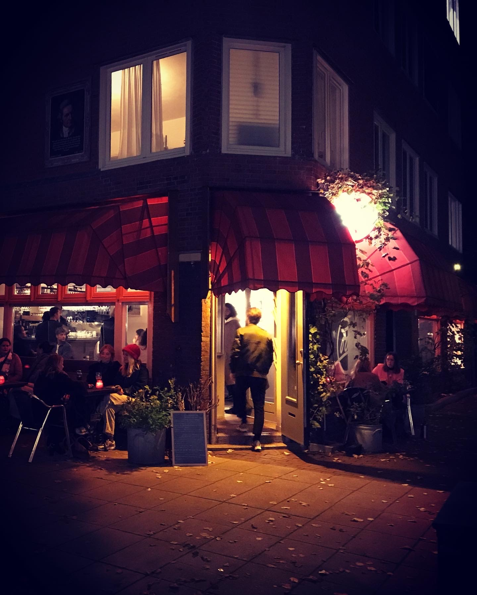

COME & TASTE
When the chefs of our favorite local bar in Amsterdam tasted our Limoncello, they instantly put it on their menu. Since then, more
bars and
restaurants in Amsterdam have been serving our cellos.
Come try them out or
get your own gold-capped bottle at the local liquor store.
Would you like to
enjoy our cellos in your favorite spot?
Share your suggestions
